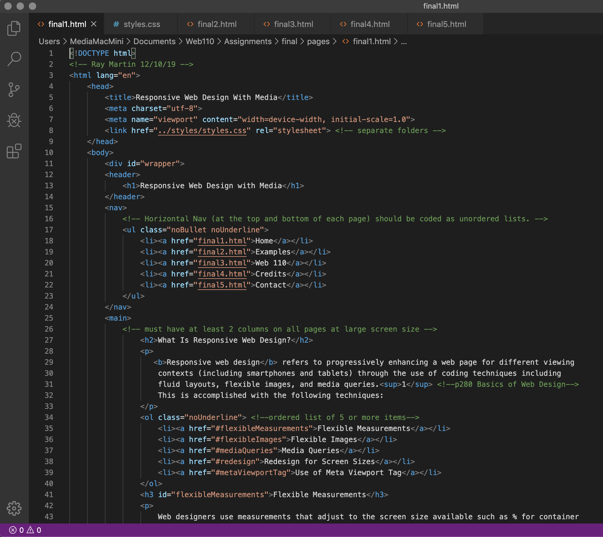

Credits
- Basics of Web Design by Terry Felke-Morris, 5th edition, p.280
- Wikipedia: Media (Communication)
- Mozilla Developer Network on HTML3
- w3schools.com
- YouTube: Lisa Friedrichsen "Principles of Responsive Web Design"
- YouTube: Ralph Phillips "Embed Responsive Videos with YouTube iframe and Video Tag
- Web 110 Catalog, jccc.edu
- Sunset image on home page - Ray Martin 2018
- JCCC Logo on a sign image - Ray Martin 2017
- Windmill on JCCC Campus image - Ray Martin 2017
- Leaf Walk Images - Ray Martin 2018
- YouTube: "Hello World" - Ray Martin, Music- "Mr. Tea" by Rondo Brothers courtesy of YouTube Free Music Audio Library
- Forgiveness Music Bed - Ray Martin 2019 commissioned for use in videos at forgivenessinstitutekc.com
- Facebook Information: statista
- YouTube Information
- Vimeo Information
- Dailymotion Information
- Thanks For Visiting Video - Ray Martin 2019 (Stock Final Cut Pro Title Animation)
- Wikipedia: PDF
